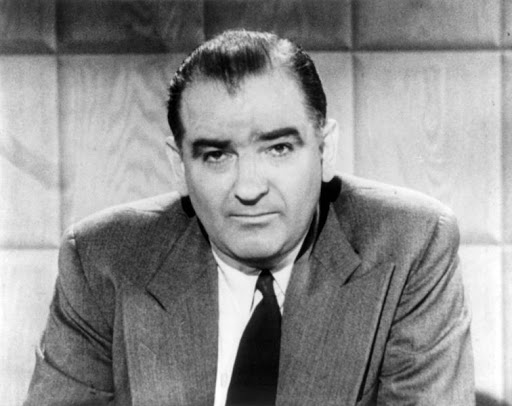

-
Naissance 1797Naissance de la première théorie du complot par l'abbé Augustin Barruel : celle-ci ne voit pas la Révolution française comme le résultat d'un mouvement populaire spontané mais plutôt comme le fruit d'une conspiration antichrétienne.

-
Thèse relayée par John Robison 1797L'écossais Robison a développé dans son ouvrage le plus célèbre Proofs of a Conspiracy against all the Religions and Governments of Europe, carried on in the Secret Meetings of Free-Masons, Illuminati and Reading Societies, etc., collected from good authorities la thèse d'un complot maçonnique dans la révolution française en parallèle à l'action des Illuminés de Bavière.
-
Protocoles des Sages de Sion 1897Les Protocoles des Sages de Sion est un faux qui se présente comme un plan de conquête du monde établi par les juifs et les francsmaçons.
-
Chute du gouvernement de Vichy 20 août 1944Après la chute du gouvernement de Vichy, une large discréditation a accompagné les théories du complot en France.
-
Peur rouge 1950-1954Cette période connue sous le nom de Peur rouge a été marquée par les diatribes de Joseph Raymond McCarthy et son équipe contre le gouvernement fédéral des États-Unis, et pour leur campagne contre tous ceux qu'ils soupçonnaient d'être ou de sympathiser avec les communistes.
-
Terme du théorie du complot 7 octobre 1966Apparition de l'expression « Théorie du complot » pour la première fois dans Le Monde dans un article évoquant l’assassinat du président Kennedy.

-
Apparition sur Internet 2001Première apparition des théories du complot sur Internet, portant sur les attentats de 11 Septembre 2001.
-
Covid-19 2020Cette année a connu un grand nombre de théories du complot suite à la pandémie du covid-19, dont les plus répandues sont celle liée à l'origine du virus et l'autre vis à vis le traitement de la chloroquine, et avec le confinement et l'accès fréquent des gens aux réseaux sociaux, ces théories sont de plus en plus propagées tout en chassant plus d'adhérents notamment les jeunes.